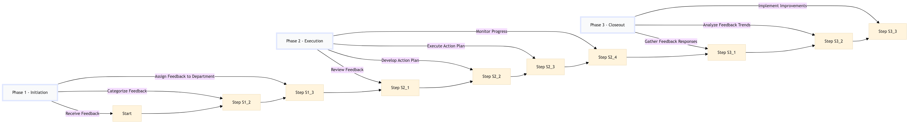

| Role | Steps |
|---|---|
| Guest Services Agent | 1.1 3.1 |
| Guest Services Manager | 1.2 1.3 2.4 |
| Department Head (e.g., Housekeeping Manager) | 2.1 2.2 |
| Department Staff (e.g., Housekeeper) | 2.3 |
| Revenue Manager | 3.2 |
| Executive Housekeeper | 3.3 |
| Step | Name | Role | System | Input | Output | KPI | Dec? | Exc? | Pain Point / Risk |
|---|---|---|---|---|---|---|---|---|---|
| 1.1 | Receive Guest Feedback | Guest Services Agent | Oracle OPERA Cloud | Digital feedback submission | Feedback logged in Oracle OPERA Cloud | < 3 min response time | N | Y | Handling large volumes of feedback simultaneously |
| 1.2 | Categorize Feedback | Guest Services Manager | Oracle OPERA Cloud | Logged feedback | Categorized feedback (e.g., cleanliness, service, amenities) | < 5 min per feedback item | N | Y | Accurate categorization of mixed feedback |
| 1.3 | Assign Feedback to Department | Guest Services Manager | Oracle OPERA Cloud | Categorized feedback | Feedback assigned to relevant department (e.g., Housekeeping, Front Desk) | < 2 min per assignment | N | Y | Ensuring correct department receives feedback |
| 2.1 | Review Feedback | Department Head (e.g., Housekeeping Manager) | Oracle OPERA Cloud | Assigned feedback | Feedback reviewed and noted for action items | < 10 min per review | N | Y | Handling sensitive or complex feedback |
| 2.2 | Develop Action Plan | Department Head (e.g., Housekeeping Manager) | Oracle OPERA Cloud | Reviewed feedback | Action plan with responsible party and timeline | < 15 min per action plan | N | Y | Creating actionable plans from general feedback |
| 2.3 | Execute Action Plan | Department Staff (e.g., Housekeeper) | Oracle OPERA Cloud | Action plan | Feedback addressed and resolved | < 1 day for minor issues, < 3 days for major issues | N | Y | Resource allocation for addressing high-priority feedback |
| 2.4 | Monitor Progress | Guest Services Manager | Oracle OPERA Cloud | Action plan status updates | Progress report to Guest Services Team | < 1 hour per day | N | Y | Tracking multiple action plans simultaneously |
| 3.1 | Gather Feedback Responses | Guest Services Agent | Oracle OPERA Cloud | Resolved feedback items | Feedback responses to guests | < 2 min per response | N | Y | Personalizing responses for each guest |
| 3.2 | Analyze Feedback Trends | Revenue Manager | Microsoft Power BI | Collected feedback data | Trend analysis report | < 1 day per week | N | Y | Identifying actionable trends from large datasets |
| 3.3 | Implement Improvements | Executive Housekeeper | Oracle OPERA Cloud | Trend analysis report | Operational improvements based on feedback | < 1 week per improvement | N | Y | Aligning departmental efforts with hotel-wide goals |
This process outlines the management of a guest feedback platform at a full-service Marriott hotel, ensuring timely collection, analysis, and response to guest feedback.